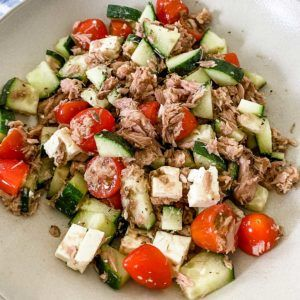

Ingredientes: Pepino, Tomates Cherry, Atún, Limón(Opcional)
Primero cogemos el pepino. Lo puedes pelar o dejarlo así si. Lo cortamos en triángulos, trozos maso menos normales.
Después cogemos los tomates cherrys y los cortamos por la mitad. Luego le echamos el atún en lata o el atún que más te guste y los mezclas todo.
Lo puedes marinar todo lo que quieras. Con aceite y sal, vinagre..etc. En mi caso yo le voy a echar Limón, sal y un poco de aceite.